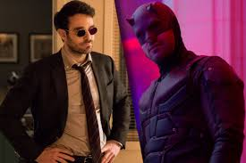
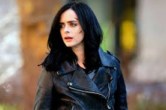
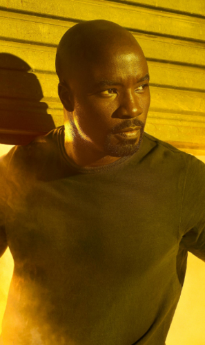
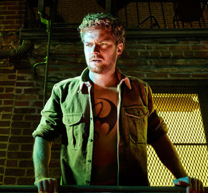
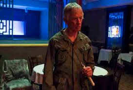

Daredevil
Matthew "Matt" Murdock is a man who was blinded as a young boy, but was gifted with extraordinary senses. After his father was murdered by mobsters, Murdock dedicated his life to fight injustice in New York City as a lawyer by day with his law firm Nelson and Murdock, and by night as a vigilante known as Daredevil. His actions as a crime fighter put Murdock into conflict with a crime lord named Wilson Fisk. Murdock used his skills to expose Fisk's criminal activities and have him taken to prison.
Daredevil's actions in New York City and his strict moral code soon put him into conflict with the Punisher, a vigilante who believed that death was the only punishment for crime. Daredevil was thrown into more turmoil by the return of his old lover Elektra and his former mentor Stick, who attempted to recruit him into their war with the Hand. Murdock eventually managed to find a middle ground with the Punisher while also defeating the Hand's member Nobu Yoshioka, although then losing Elektra in the process and watching Nelson and Murdock fall apart as Foggy Nelson still struggled to cope with his friend's double life.
Murdock then retired from his vigilante activities and attempted to live a normal life as pro-bono lawyer. However, with the Hand resurrecting Elektra and threatening the city again, Murdock joined fellow vigilantes, Luke Cage, Iron Fist and Jessica Jones to destroy the Hand. After staying behind while the Hand's headquarters collapsed, he woke up under the care of nuns.
Jessica Jones
Jessica Jones is a private investigator from New York City. After she was orphaned at a young age, Jones was taken in by Dorothy Walker, and developed a sisterly bond with her daughter, Trish. Shortly after being adopted, Jones discovered she possessed superhuman abilities due to the fatal car crash that took the life of her parents and eventually decided to pursue a career as a superhero. However, a fateful encounter with Kilgrave, a vicious man with mind controlling powers, derailed her superhero career and she spent a torturous tenure as Kilgrave's slave before finally breaking free of his control. The experience left Jones suffering from post-traumatic stress disorder, prompting her to hang up her secret identity and open her own detective agency.
Trying to remain an average person and keep a low profile, she would take on minor cases for cash, while caught in a spiral of despair and destructive behavior. However, the return of Kilgrave forced her to put aside her traumas and stop him. Jones had multiple grueling encounters with Kilgrave, but with the help of Trish, Jeri Hogarth, and fellow superhuman Luke Cage, Jones finally killed the maniac, conquering her demons and prompting her to continue her superhero career.
A year later, Jessica received a case which ended when her client's husband was driven to suicide by the Hand, prompting her to continue the investigation and her being recruited by Stick to join fellow vigilantes, Luke Cage, Iron Fist and Daredevil, to destroy the Hand, ending with the apparent sacrifice of Daredevil.
Luke Cage
Carl Lucas is a former policeman from Savannah, Georgia, who was wrongfully convicted into Seagate Prison, where he met and fell in love with therapist Reva Connors. During his time in prison, he was subjected to an experiment by Noah Burstein to save his life, leaving him physically enhanced with superhuman strength and seemingly unbreakable skin. After he escaped from his prison, he changed his name to Luke Cage and moved to New York City, marrying Connors, opening a bar named Luke's and living in there until Connors' death seemingly due to a random bus crash.
Months later, Cage came across private investigator Jessica Jones during the course of an investigation and started a relationship with her, but he discovered that Jones was involved in the murder of his wife due to the influence of Kilgrave. Following his encounter with Jones and Kilgrave, he moved from Hell's Kitchen into Harlem in order to build a new life, working for Pop. However his own life became more complicated due to the actions of Cottonmouth, whose henchman Tone killed Pop, starting a war between the pair which only ended when Cottonmouth was found dead.
Blamed for Cottonmouth's murder, Cage was forced to go on the run, hunted by his ally Misty Knight and his former friend Willis Stryker, who returned to tell Cage that they were brothers before attempting to kill him. Eventually Cage defeated Stryker but he was still arrested by the police to continue his original sentence. Being released early by Foggy Nelson, Luke returned to Harlem and Claire Temple, only to run into the Hand after investigating the murder of Sean Miller and being introduced to Iron Fist. Together, with Jessica Jones and Daredevil, Cage helped destroy the Hand to protect New York City, apparently losing Daredevil.
Iron Fist
Daniel Thomas "Danny" Rand is the only child of the billionaire owners of Rand Enterprises who lost his parents in a plane crash which resulted in the young Rand being rescued by Monks and taken to K'un-Lun where he trained and eventually took the title of the Iron Fist. Rand returned to New York City to reclaim his name and soon fell into conflict against the Hand when he had learned that Madame Gao was using his company to sell her own heroin. Rand challenged Gao and soon joined forces with his father's ally Harold Meachum and Bakuto. However Meachum and Bakuto turned against Rand, wishing to use the power of the Iron Fist for their own purposes, forcing Rand to defeat them both. Thinking that he had fulfilled his mission to defeat the Hand, Rand returned to K'un-Lun with his new friend Colleen Wing, only to discover that the gate to the city has been closed while he was gone.
Searching the globe with Wing for any leads to the Hand, Rand's one lead was assassinated by Elektra, prompting him to return to New York, where he was introduced to Luke Cage by Claire Temple. Together, with vigilantes Daredevil and Jessica Jones, Rand fulfilled his prophecy to destroy the Hand, saving New York yet apparently losing Daredevil in the process. Honouring his ally's final words to him, Rand decided to continue protecting New York.
Stick
I know Stick isn't actually the Defender, but I like him too much to leave him out in the cold.
Stick was a mysterious martial arts master and Chaste member. Due to the war the Chaste had waged with the Hand, Stick was tasked with finding and training soldiers, recruiting Elektra, as she had proved too dangerous to be controlled he abandoned her and trained Matt Murdock instead. Years later Stick recruited Murdock, now working as Daredevil, to seek out and kill the Black Sky just before the Hand could unleash it. With the Hand growing stronger, Stick and Elektra attempted again to recruit Daredevil, but he still refused and instead convinced Elektra to change sides. This then caused Stick to order Elektra's death, eventually leading to him being captured and tortured by the Hand. Stick was saved by his former pupils, and had later witnessed Elektra's death by the Hand leader Nobu Yoshioka, so in response Stick killed him.
n the final days of the war, Stick had witnessed the Chaste being defeated by Alexandra Reid's forces and went to the Defenders in the hopes of defeating his enemies once and for all. However upon learning that the Hand required Iron Fist to complete their plans, Stick chose to kill Danny Rand to stop this from happening. Stick was stopped however when Elektra returned and kidnapped Iron Fist, plunging her blade into Stick's chest and killing him.